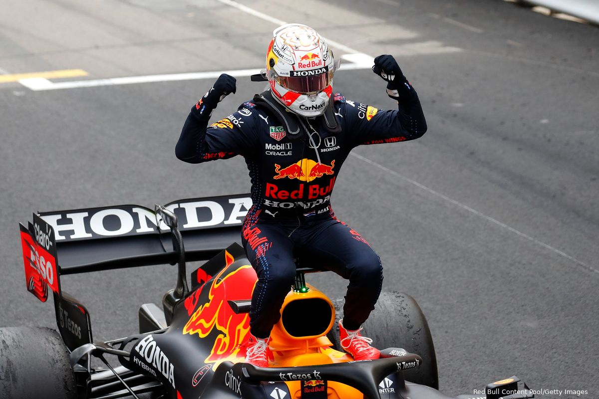

De afgelopen weken zijn de nieuwe auto's gepresenteerd. In 2022 zouden er een aantal aanpassing worden gemaakt aan de auto's.
Zo zijn de achtervleugels aangepast, hierdoor kunnen de auto's dichter achter elkaar rijden.
De auto's rijdens straks ook allemaal op 18 inch banden. Deze banden zijn groter dan het vorige seizoen.
Lees hier verder
Bahrein internatiol circuit, Sakhir
VT1 18 maart 2022 13:00-14:00
VT2 18 maart 2022 16:00-17:00
VT3 19 maart 2022 13:00-14:00
Quali 19 maart 2022 16:00-17:00
Race 20 maart 2022 16:00-18:00
Top 3
1. Verstappen
2. Hamilton
3. Perez
Bekijk hier de volledige Championship
